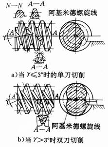
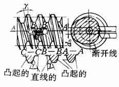
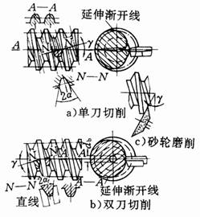
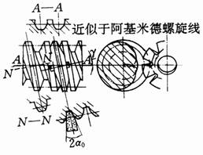
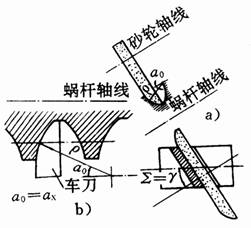
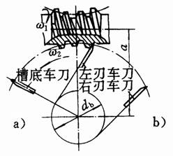
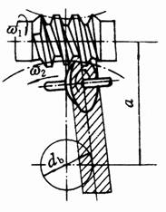

种类 |
蜗杆加工情况 |
特点和应用 |
效率 |
|
普通圆柱蜗杆传动 |
阿基米德圆柱蜗杆 （ZA型） |
 |
车制，车刀刀刃平面通过蜗杆轴线，这种蜗杆在轴向剖面A—A上具有直线齿廓，法向剖面N一N上齿廓为外凸曲线；而端面上的齿廓曲线为阿基米德螺旋线。磨削时砂轮需经修正，才能磨出正确的齿廓 |
0.5～0.8 |
渐开线圆柱蜗杆 （ZI型） |
 |
一般车制，车刀刀刃平面与基圆db相切，被切出的蜗杆齿面是渐开线螺旋面，端面齿廓为渐开线 |
可达0.9 |
|
法向直廓蜗杆 （ZN型） |
 |
亦称延伸渐开线蜗杆，车制时刀刃平面放在螺旋线的法面上，蜗杆在剖面N—N上具有直线齿廓，在端面上为延伸渐开线齿廓。用单刀切制的蜗杆，齿槽在法向剖面上具有对称的直线齿廓（图a）；用双刀切出的螺牙在法向剖面上具有对称的直线齿廓（图b）。这种蜗杆可用砂轮磨齿（图c），加工较筒单 |
可达0.9 |
|
锥面包络圆柱蜗杆 （ZK型） |
 |
蜗杆螺旋面由锥面盘状铣刀或砂轮包络而成。包络形成的螺旋面是非线性的。齿廓在各个截面均呈曲线状。由于锥形盘状铣刀的成形线是直线，刀具是易于制造、刃磨、修整及检验，也使蜗杆的磨削及相应蜗轮滚刀的磨削较容易 |
可达0.9 |
|
圆弧圆柱蜗杆 （ZC型） |
 |
蜗杆齿面一般为凹面的圆柱蜗杆。是用凸圆弧刃的工具加工而成称为齿形C |
|
|
环面蜗杆传动 |
直廓环面蜗杆 （TSL型） |
 |
蜗杆的螺旋面可以用一把直刃车刀（图a），在专用的机床上，同时切制齿槽的两侧齿面，也可以用两把车刀（图b）分别切制齿的两侧齿面。蜗杆的齿面为不可展的直纹曲面，难以精确磨削。其承载能力为普通圆柱蜗杆传动的4倍，应用较广泛。缺点：工艺复杂，蜗杆齿修形技术难掌握 |
可达0.92 |
平面包络环面蜗杆 |
 |
用平面盘状铣刀或平面砂轮在专用的机床上按包络原理加工蜗杆的螺旋面，用此蜗杆与平面齿蜗轮组成的传动，称为平面一次包络环面蜗杆传动。若以上述蜗杆的螺旋面为母面，按包络原理加工出蜗轮齿面，用此蜗轮与上述蜗杆组成的传动称为平面二次包络环面蜗杆传动（TOP型） |
可达0.97 |
|